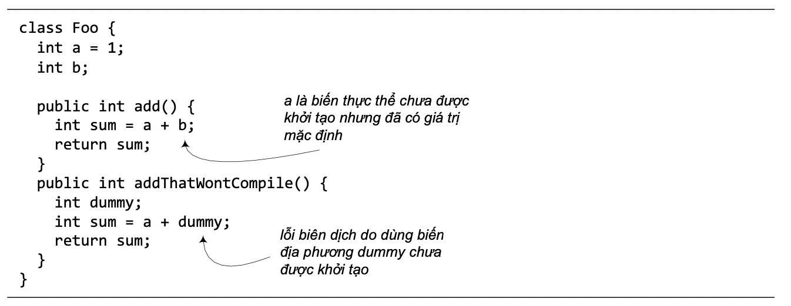

5.6. BIẾN THỰC THỂ VÀ BIẾN ĐỊA PHƯƠNG
Ta đã gặp cả biến thực thể và biến địa phương trong các ví dụ trước. Mục này tổng kết lại các đặc điểm phân biệt giữa hai loại biến này.
- Biến thực thể được khai báo bên trong một lớp nhưng không nằm trong một phương thức nào. Ví dụ a và b trong Hình 5.10 là biến thực thể của lớp Foo.
- Biến địa phương được khai báo bên trong một phương thức. Ví dụ sum và dummy trong Hình 5.10.
- Biến địa phương phải được khởi tạo trước khi sử dụng. Ví dụ dummy chưa được khởi tạo nhưng đã được dùng trong lệnh sum = a + dummy; sẽ gây lỗi khi biên dịch.

Hình 5.10: Biến thực thể và biến địa phương.
Như đã nói, tham số của một phương thức cũng là biến địa phương của phương thức đó. Nó đã được khởi tạo bằng giá trị của đối số được truyền vào phương thức.
Đó là các đặc điểm mang tính chất cú pháp và đặc thù ngôn ngữ. Còn về bản chất khái niệm, hai loại biến này khác hẳn nhau theo nghĩa sau:
- Biến địa phương thuộc về một phương thức – nơi khai báo nó. Nó được sinh ra khi phương thức được gọi và dòng lệnh khai báo nó được thực thi. Nó hết hiệu lực khi ra ngoài phạm vi – kết thúc khối lệnh khai báo nó hoặc khi phương thức kết thúc.
- Biến thực thể thuộc về một thực thể – đối tượng chủ của nó. Nó được tạo ra khi đối tượng được tạo ra và hết hiệu lực khi đối tượng đó bị hủy.